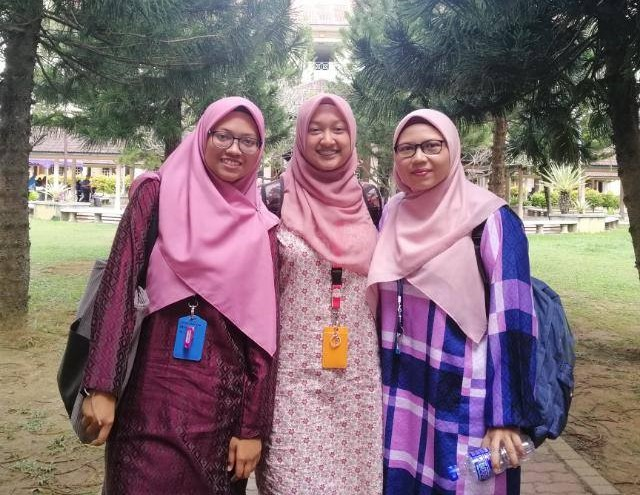

"If you are ever lucky enough to find a weirdo, never let them go"
-Matthew Gray Gubler
Deskmates
From the left, Izzati, Alia, Fatini, Reen, Nadia(me) and Izzah
This are my bestfriends from SGGS, my secondary school.
Even though we are different characters but it is the one unite us.
Let me introduce to the readers about these AMAZING FRIENDS.
Before that, the unique about us is 5 out of 6,
studying in UiTM with different courses.
Nurul Syazwani Izzati
26 June 2000
Degree in Law at UiTM Shah Alam
Have been with my classmates for 4 years in a row
Captain of the hockey team and played at the national level.
Understanding and workaholic person , thus she works while studying to buy her own car.
Nuralia
19 April 2000
Diploma in Banking at UiTM Segamat, Johore.
Both of us got closer when we were Form 4 until now.
We always study together since we are comfortable together.
The one who is straight-forward and optimistic.
Nurul Fatini
19 April 2000
Alia and Fatini are born on the same day.
Diploma in Business at UiTM Kedah.
Captain for the handball school team.
Modest and passionate in her own way.
Norazreen
12 October 2000
Future Bahasa Melayu teacher for SMKJ(C) as a student in IPG Kent
Her life in school and IPG is totally contrasting because she was never active in school.
We got closer in the final year of school.
Mature and thoughtful
Nur Izzah Zarifah
16 March 2000
My best friend and classmates since 2013.
Pretty and Intellectual person
She has a twin sister, Nur Iffah Zafirah
Even though, sometimes her decisions is unpredictable it always meet success
“I love that our effortless friendship fits perfectly with my laziness.”
— Unknown

From left: Syaza, me and Aina
Always better together
28 November 2000
Her hometown is in Pulau Langkawi
Loving and kind-hearted person
She is a second child.
Syaza and Aina are my group members and always be there for me.
Syaza Nadzirah
14 April 2000
Aina is from Arau,Perlis
Respectful and responsible
Cats lover and Stray Kidz fan
Aina and Syaza love to watch dramas and share common a lot.
Ku Nur Aina
This is my classmates for 5 semesters. I am happy and grateful to have them during my diploma
even though they are playful and childish members. This is my first time having male classmates since I am from girls school. Surprisingly, I comfortable with them despite of any awkwardness between us.